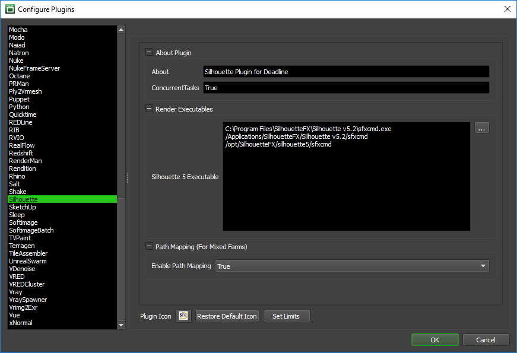

Silhouette¶
Job Submission¶
You can submit Silhouette FX jobs from the Monitor through the Submit menu.
Submission Options¶
The general Deadline options are explained in the Job Submission documentation.
The Silhouette specific options are:
Silhouette Options
Silhouette File: The Silhouette project *.sfx file to be rendered. (Make sure you select the top-level Silhouette *.sfx file and NOT the underlying ‘project.sfx’ file).
Silhouette Version: The version of Silhouette to render with.
Submit Silhouette File: If this option is enabled, the project file will be submitted with the job, and then copied locally to the Worker machine during rendering.
Frame List: The list of frames to render.
Frames Per Task: This is the number of frames that will be rendered at a time for each job task.
Advanced Options
Session: Make the specified session active in the project. If empty the currently selected session will be used to render.
Node: The specified node in the active session to render. If empty the currently selected node will be used to render.
Output Directory: The output directory to use. If empty the output directory defined in the session will be used.
Output Filename: The output prefix to use. If empty the output prefix defined in the session will be used.
Override Format: Override the image file format to be rendered. Options include: Cineon, DPX, IFF, JPEG, OpenEXR, PNG, SGI, TIFF, Targa.
Resolution: The resolution to render with. Options include: full, half, third, quarter.
Fields: Various options to handle fields. Options include: none, interlace, aa, bb, bc, cd, dd.
Dominance: Various options to handle fields. Options are: even, odd.
Additional Options: Any additional options to use while rendering.
Script Options
RunScript: Run Python script after loading the project.
Disable Rendering: If this option is enabled, rendering will be disabled, which might be useful for certain Python script jobs.
Submit Python Script File: If this option is enabled, the Python script file will be submitted with the job to the Deadline Repository.
Python Script File: The Python (*.py) script file to be executed.
Plugin Configuration¶
You can configure the Silhouette plugin settings from the Monitor. While in power user mode, select Tools -> Configure Plugins and select the Silhouette plugin from the list on the left.
Note, if the executable supports a MAJOR.MINOR.REVISION (9.0.123) numbering system in its path, then you will need to configure the explicit exe path to the particular revision that you have installed on your machines. Deadline does not track every possible revision available or indeed where it might be custom installed to, so a studio should verify their exe paths are correct for each application version they choose to use with Deadline. Multiple exe paths can still be declared and the first one that is found on a particular Worker on a particular platform will be used from the exe list.
Render Executables
Silhouette 5 Executable: The path to the Silhouette 5 executable used for rendering. Enter alternative paths on separate lines. Default paths for Windows, macOS and Linux are already provided, but can be updated if applicable.
Path Mapping (For Mixed Farms)
Enable Path Mapping: If enabled, a temporary Silhouette file will be created locally on the Worker for rendering because Deadline does the path mapping directly in the Silhouette file. This feature can be turned off if there are no Path Mapping entries defined in the Repository Options.
FAQ¶
Is Silhouette supported by Deadline?
Yes
What versions of Silhouette are supported?
Deadline supports version 5 and upwards.
Can I submit on macOS and render on Windows or Linux with Silhouette or vice-versa?
Yes, Deadline supports this workflow in terms of job submission and execution across the 3 platforms that the Silhouette application supports. Make sure Enable Path Mapping is enabled in the Silhouette plugin configuration and you have added all applicable network file paths via Mapped Paths in Repository Configuration.
Error Messages and Meanings¶
This is a collection of known Silhouette error messages and their meanings, as well as possible solutions. We want to keep this list as up to date as possible, so if you run into an error message that isn’t listed here, please visit the Thinkbox Help Centre and let us know.
Currently, no error messages have been reported for this plugin.

{kind=link}
{kind=link}
{kind=link}